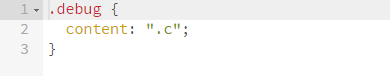
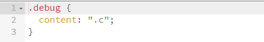
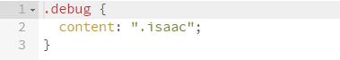

SCSS字符分割函数获取当前选择器名
有点长的前言
常有这样的情况：比如以下面的一段代码来说，多人开发的情况下，很可能你写了一个.header-icon的css样式描述，你的同事也开发了一个！
并且他的样式优先级比你的高，目前你负责的部分需要你的样式生效！
1 | .side{ |
这要怎么办？直接想到的有两个方法：
!important；重复声明选择器，比如
.bar-header-icon.bar-header-icon；
很多时候负责任的开发者都会使用后者，因为后者可以前者覆盖，具备一定的扩展性！
1 | .side{ |
没错这样就ok！
但细想可知，虽然&-header的当前选择器名是和.bar-header-icon的是相等的，但是一旦父选择器名字（.header）改了，就出问题，健壮性过差！
当然如果你不嫌麻烦，可以同时改两个地方。但实际开发时可能就不是两个地方的事了……
聪明如你会想到这样写：
1 | .side{ |
你期望输出的是：
1 | .side .bar-header-icon.bar-header-icon { |
但是，实际上输出的是：
1 | .side .bar-header-icon.side .bar-header-icon { |
如你所见，在上面的情况中&-icon并不与.bar-header-icon等价，实际上，&编译后的是.side .bar-header。是不是就有点尴尬了~
正文
scss没有提供获取当前选择器名的方法或者全局变量，那么就自己实现！
&输出的字符串是一个选择器名的列表，这些元素名一般以空格分割，还有的就是. > + ~等等，
因此可以通过这些分割字符串，然后”数组“的最后一个元素就是目标选择器名！
字符串分割函数
1 | @function str-split($str, $separator) { |
pop函数
1 | @function list-pop($list) { |
获取当前selector
1 | @function current-selector($str) { |
增强版的current-selector
1 | @function nth-by-flag($list, $flag) { |
测试
1 | // 封装一个debug-mixin |
1 | @include debug(current-selector(".a .b .c")); |

1 | $sep: '.'; |

1 | @include debug(current-selector(".a .isaac .b .c", null, 'isaac')); |
